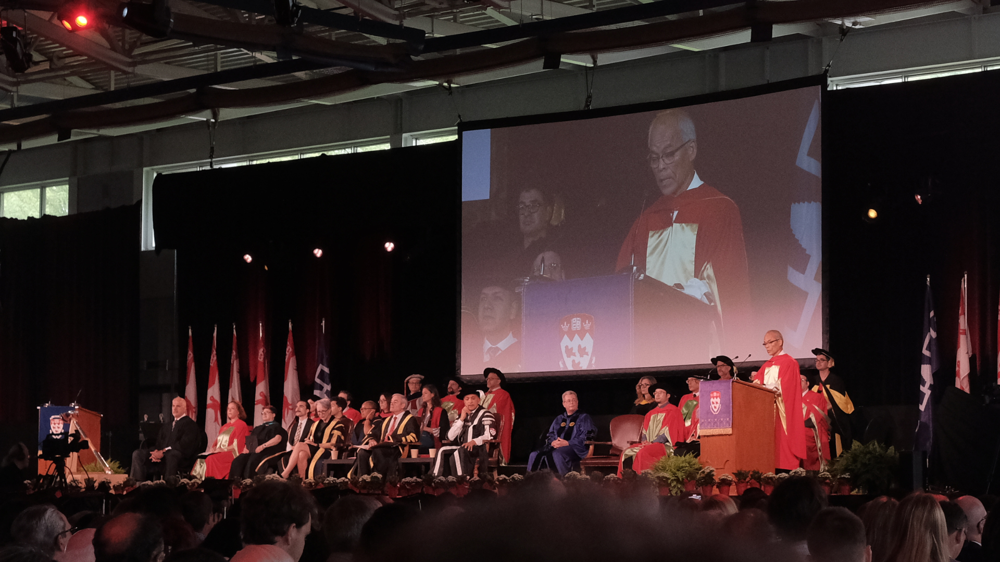

Professeur Shuji Nakamura (中村 修二)
1993
L'invention de
diodes électroluminescentes (DEL)
bleues
2014
Prix Nobel de physique
avec Isamu Akasaki et Hiroshi Amano.
Pourquoi est-il spécial pour moi ? 💡
J'ai trois raisons! ➡️
[1] J'ai pris cette photo ! (Université McGill, 2025)
[2] Il est ingénieur en électronique
[3] Sa vie est une source d'inspiration !
La vie sans les DELs bleues
Voulez-vous en savoir plus ?